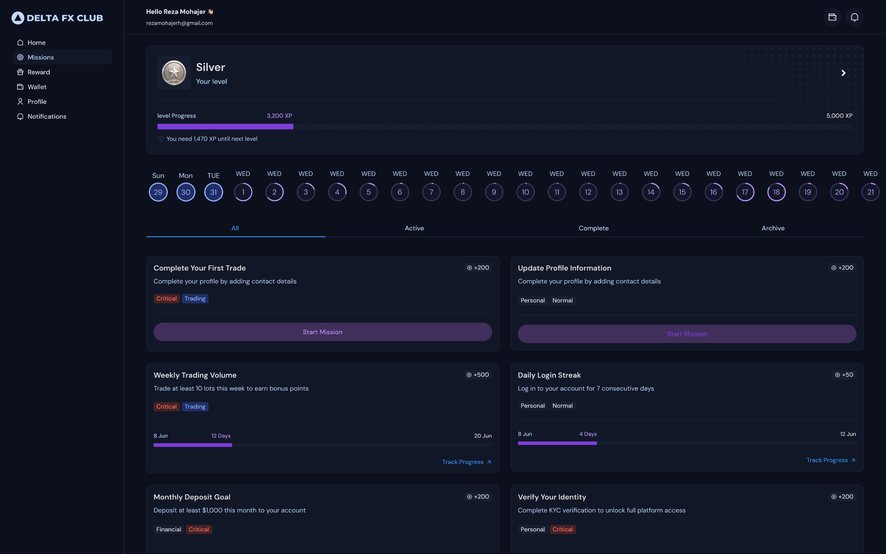
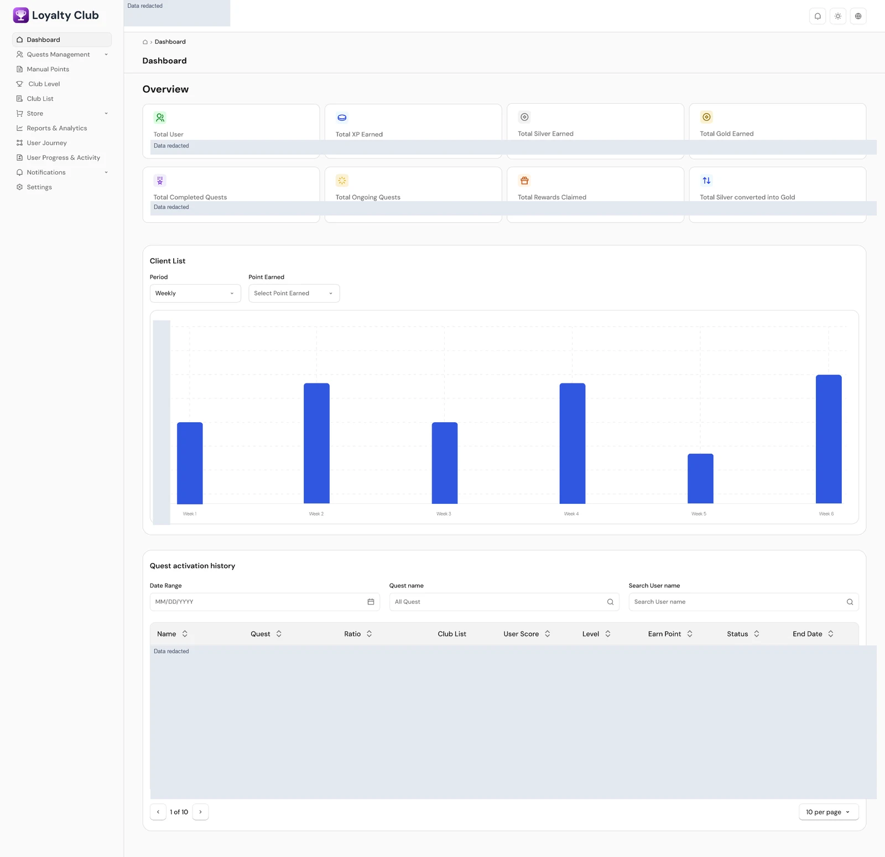
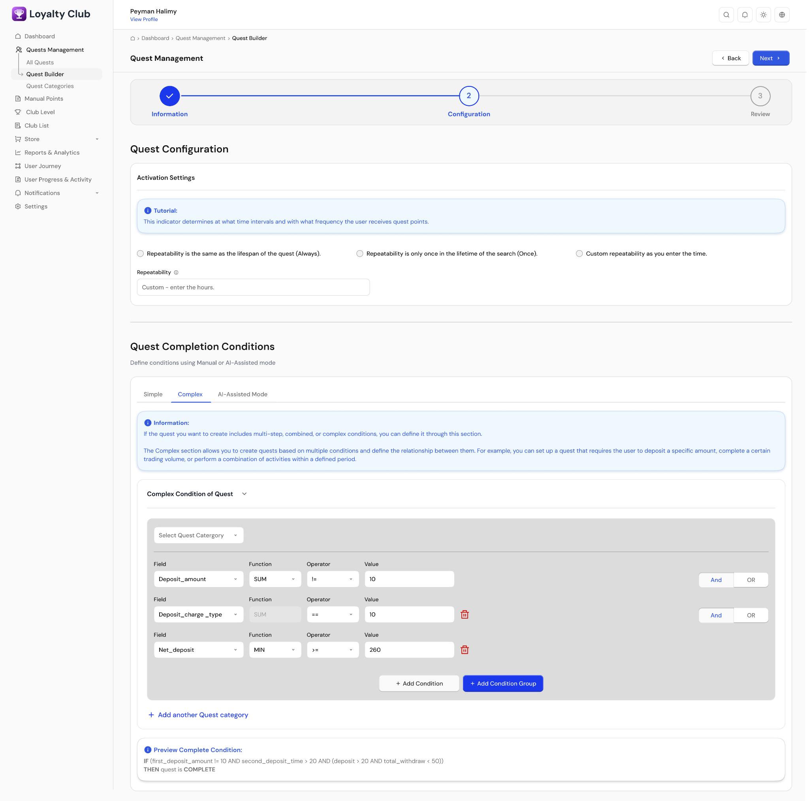

FinTech / Product Case Study
Loyalty Club
Behavioral segmentation, quests, progression and governed rewards.

Supplied product artifact · privacy edited · no performance claims inferred.
Product overview
A brokerage loyalty product organized around behavioral segments, missions, progression and rewards. The supplied material includes customer-facing missions and administration tools.
Business problem
The presentation frames activation and retention as product goals. Its workflow connects behavior signals to segmentation, quests and governed incentives; no measured retention improvement is supplied.
Target users
Brokerage customers completing missions, and operations or retention teams configuring quests, segments and rewards.
My product role
My CV establishes CPO responsibility for product strategy, roadmaps, prioritization and cross-functional teams across this portfolio. Product designers and engineers contributed the design and implementation work. The supplied UI artifacts are not presented as work I designed or coded alone.
Product strategy and discovery
The documented product strategy uses behavioral segmentation and quest packs to connect customer actions with progression and reward rules. Specific discovery activities and my decisions within this product are pending.
Main capabilities
Mission lists, progression and levels; behavioral segments; rewards; activation history; quest configuration and completion-condition rules. These are visible in the supplied designs and presentation.
Key workflows
Customer: view missions, follow progress and claim eligible rewards. Administrator: configure activation and completion conditions in Quest Builder, then review client progress and activation history.
Delivery and technical collaboration
The CV describes leadership of Product Owners, Product Designers and cross-functional squads, including hiring and role ownership. Product-specific implementation details and delivery dates are pending confirmation.
Outcomes supported by evidence
The supplied material documents product capabilities and design workflows. Verified adoption, release status and business-impact evidence for this product are pending; values shown in design artifacts are not outcome claims.
Screenshot gallery
Supplied artifacts have been edited for privacy. Design screens document product context; they do not establish production status or measured results.
View full image ↗

View full image ↗

View full image ↗

View full image ↗